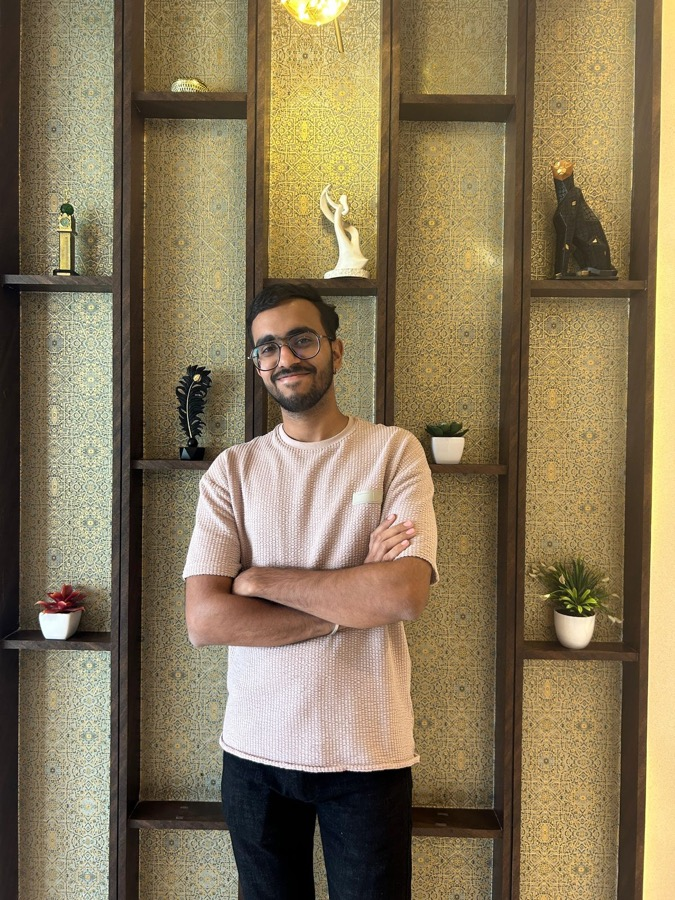
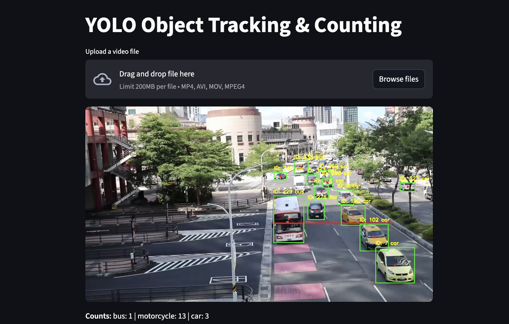
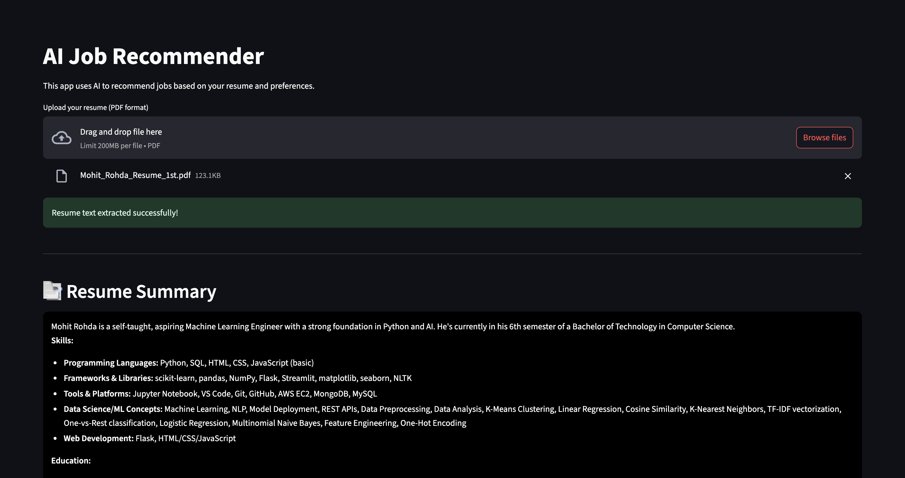
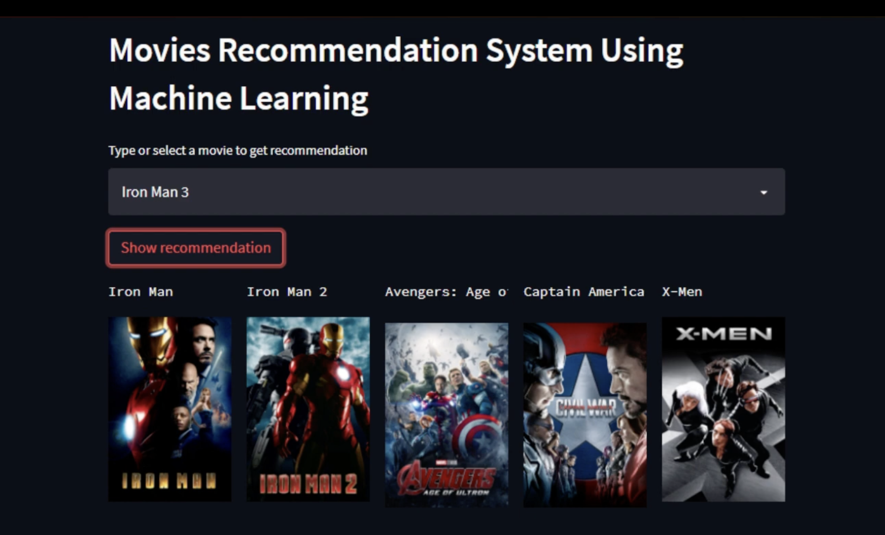

GENERATIVE AI · RAG
AI Meeting Intelligence
A multilingual video assistant that turns meetings into summaries, action items, and a knowledge base you can actually talk to.

Hi, I’m Mohit RohdaI turn complex data into useful AI. Building with Generative AI, machine learning, and computer vision — from the first experiment to a working product.
From models to meaningful applications.
Python · LangChain · FastAPI · TensorFlow
Generative AI ✳ Computer Vision ✳ MLOps ✳ Intelligent Systems
SELECTED WORK
A few things I’ve built with AI.
Explore the full collection when you’re curious.
GENERATIVE AI · RAG
A multilingual video assistant that turns meetings into summaries, action items, and a knowledge base you can actually talk to.
AGENTIC AI · AUTOMATION
Specialized search, reader, writer, and critic agents working together to research the web and refine a report.
DEEP LEARNING · COMPUTER VISION
A CNN-powered leaf disease classifier, taken from model training to a full-stack application on AWS.
NLP · MLOPS
A YouTube comment sentiment pipeline with experiment tracking, reproducible builds, and automated deployment.
LLM EVALUATION · GENERATIVE AI
A prompt playground that compares Gemini responses, evaluates instruction following, and keeps a history of results.
DOCUMENT INTELLIGENCE · RAG
Ask questions about a PDF and retrieve relevant context. A document-to-conversation workflow powered by Mistral AI.

COMPUTER VISION · OBJECT TRACKING
YOLO-powered video analysis with persistent object IDs, annotated detections, and line-crossing counts.

GENERATIVE AI · CAREER TOOLS
Resume analysis, skill-gap discovery, and a learning roadmap, connected to relevant job searches with Gemini.
NLP · MULTI-LABEL CLASSIFICATION
Classify Wikipedia comments across six toxicity categories using TF-IDF and one-vs-rest classification.

MACHINE LEARNING · RECOMMENDATIONS
Explore content-based movie recommendations through text features, similarity, and an approachable interface.
3 featured projects · 7 more to discover
No projects found. Try “RAG”, “Python”, or choose another category.
There’s more in the repository. Explore my GitHub ＋WHAT I DO AS AN AI DEVELOPER
Explore how I connect models, data,
and software to make useful AI.
MEET YOUR NEXT AI DEVELOPER
I’m an AI developer based in Bhilai, India, with a Computer Science background and a hands-on approach to solving problems with data.
I enjoy connecting the pieces: a model, a retrieval pipeline, an API, and a useful interface. My work spans language, vision, and the engineering that makes AI accessible beyond an experiment.
Think end to end.From messy inputs to a working application.
Make the work reproducible.Track experiments. Version data. Automate delivery.
EXPERIENCE & EDUCATION
Developed a U-Net model to detect oil spills in satellite imagery. Built the preprocessing, training, evaluation, and inference pipeline, then connected it to a FastAPI backend and an interactive frontend.
Computer Science education paired with independent projects across machine learning, generative AI, and full-stack development. Overall SPI average: 7.4.
THE TOOLKIT
A practical stack for the full AI lifecycle.
LangChain · LangGraph · RAG · LLM agents · LCEL · Prompt engineering · ChromaDB
Python · TensorFlow · PyTorch · scikit-learn · OpenCV · NLP · Pandas · NumPy
FastAPI · Flask · Docker · AWS EC2 · MLflow · DVC · GitHub Actions · SQL
Machine Learning with Python IBM / CognitiveClass · 2025
Crash Course on Python Google / Coursera · 2024